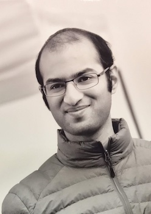
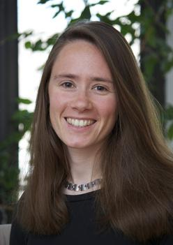
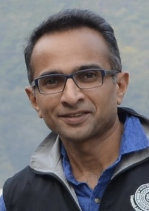

Conference photo

Conference details
- Registration:
fill out the registration form by August 15, 2023.Registration is closed. - Schedule
- Participant List
- Travel: The conference will take place at the OU Math Department in Norman, OK. The closest aiport (~30 minutes by car) is OKC (ground transport options are Uber, Lyft, taxis and an airport shuttle). Weekend parking (Fri 4:30pm to Mon 7am) is available without a permit at the Elm Street Parking Garage. You may look for street parking before 4:30pm on Friday or see OU Visitor Parking.
- Lodging: We will arrange lodging for funded participants at the La Quinta in Norman. Participants are encouraged to carpool between the hotel and OU. If needed, there are also Lyft, Uber, taxis and an inconvenient bus system (route 110 or 112; see Norman On-Demand for night/Sunday service).
- Local organizers: Kimball Martin, Ameya Pitale
Plenary Speakers
|

Rahul Dalal Johns Hopkins University |
 Ellen Eischen University of Oregon |
 A. Raghuram Fordham University |
About TORA
Texas-Oklahoma Representations and Automorphic forms (TORA) is a conference series hosted in rotation by Oklahoma State University, the University of Oklahoma, and the University of North Texas. The TORA meetings bring together the automorphic forms and representation theory community of the South Central region to hear about recent research in automorphic forms and representation theory. Graduate students and junior researchers are particularly encouraged to attend and present their own work.
For more information, see the main TORA website.
TORA XII is supported by NSF grant DMS-1855265.